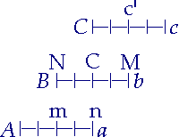
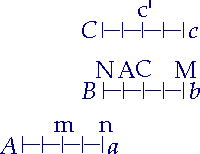
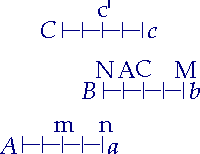

Zenons Eigentümlichkeit ist die Dialektik. Er ist der Meister der eleatischen Schule, in welchem das reine Denken derselben zur Bewegung des Begriffs in sich selbst, zur reinen Seele der Wissenschaft wird, - der Anfänger der Dialektik. Nämlich in den bisherigen Eleaten sehen wir nur den Satz: "Das Nichts hat keine Realität, ist gar nicht, und was Entstehen und Vergehen ist, fällt also hinweg." Hingegen bei Zenon sehen wir zwar auch ebensolch Setzen und Aufheben dessen, was ihm widerspricht; aber wir sehen zugleich nicht mit dieser Behauptung anfangen, sondern die Vernunft den Anfang machen, - ruhig in sich selbst an demjenigen, was gesetzt wird als seiend, seine Vernichtung aufzeigen. Parmenides behauptete: "Das All ist unveränderlich, denn in der Veränderung wäre das Nichtsein dessen gesetzt, was ist; aber es ist nur Sein, in 'Nichtsein ist' widerspricht sich Subjekt und Prädikat." Zenon hingegen sagte: "Setzt eure Veränderung; an ihr als Veränderung ist das ihr Nichts, oder sie ist nichts." Dabei war jenen Veränderung bestimmte, erfüllte Bewegung, Zenon sprach und wandte sich gegen die Bewegung als solche oder die reine Bewegung.
Zenon war ebenfalls ein Eleat; er ist der jüngste und hat besonders im Umgang mit Parmenides gelebt. Dieser gewann ihn sehr lieb und nahm ihn an Sohnes Statt an. Sein eigentlicher Vater hieß Teleutagoras. Er stand nicht nur in seinem Staat bei seinem Leben sehr in Achtung, sondern war auch allgemein berühmt und besonders geachtet als Lehrer. Platon224) erwähnt von ihm: aus Athen und anderen Orten kamen Männer zu ihm, um sich seiner Bildung zu übergeben. Es wird ihm als stolze Selbstgenügsamkeit angerechnet, daß er (außer der Reise nach Athen) seinen Aufenthalt fortdauernd in Elea hatte und nicht längere Zeit in dem großen und mächtigen Athen lebte, um dort Ruhm einzuernten. Besonders berühmt machte seinen Tod die Stärke seiner Seele in den sehr verschiedenen Erzählungen, daß er einen Staat (man weiß nicht, ob sein Vaterland Elea oder in Sizilien) von seinem Tyrannen (dessen Name verschiedentlich, überhaupt aber der nähere geschichtliche Zusammenhang nicht berichtet wird) auf folgende Weise mit Aufopferung seines Lebens befreit habe.225) Er sei nämlich eine Verschwörung, den Tyrannen zu stürzen, eingegangen, diese aber verraten worden. Als ihn der Tyrann nun im Angesicht des Volkes auf alle Weise foltern ließ, um ihm das Geständnis der Mitverschworenen auszupressen, und ihn nach den Feinden des Staats fragte, so habe Zenon zuerst dem Tyrannen alle Freunde des Tyrannen als Teilnehmer angegeben und dann den Tyrannen selbst als die Pest des Staates genannt. So haben die gewaltigen Ermahnungen oder auch die entsetzlichen Marter und der Tod des Zenon die Bürger aufgebracht und ihnen den Mut erhoben, über den Tyrannen herzufallen, denselben zu töten und sich zu befreien. Verschieden wird besonders die Weise des letzten Auftritts - jene heftige und wütende Weise des Sinnes - erzählt. Er habe sich gestellt, als ob er dem Tyrannen noch etwas ins Ohr [habe] sagen wollen, ihn dann in das Ohr gebissen und so festgehalten, bis er von den andern totgeschlagen worden. Andere berichten, er habe ihn mit den Zähnen bei der Nase gepackt. Andere, er habe, als ihm auf jene Antwort die größten Martern angetan worden, sich die Zunge abgebissen und sie dem Tyrannen ins Gesicht gespien, um ihm zu zeigen, daß er nichts von ihm herausbringen könne; er sei dann in einem Mörser zerstampft worden.
a) Die Zenonische Philosophie nach ihrem Thetischen ist dem Inhalte nach im ganzen dasselbe, wie wir bei Xenophanes und Parmenides gesehen, nur mit diesem Unterschiede, daß die Momente und Gegensätze mehr als Begriffe und als Gedanken ausgedrückt sind. Schon in seinem Thetischen226) sehen wir Fortschritt; er ist weiter im Aufheben der Gegensätze und Bestimmungen.
"Es ist unmöglich", sagt er, "daß, wenn etwas ist, es entstehe" (und zwar bezieht er dies auf die Gottheit); "denn entweder müßte es aus Gleichem oder Ungleichem entstehen. Beides ist aber unmöglich; denn dem Gleichen kommt nicht zu, aus dem Gleichen mehr erzeugt zu werden, als zu erzeugen, da Gleiche dieselben Bestimmungen zueinander haben müssen." Mit der Annahme der Gleichheit fällt der Unterschied von Erzeugendem und Erzeugtem hinweg. "Ebensowenig kann Ungleiches aus dem Ungleichen entstehen; denn wenn aus Schwächerem das Stärkere oder aus Kleinerem das Größere oder aus Schlechterem das Bessere oder umgekehrt das Schlechtere aus dem Besseren entspränge, so würde Nichtseiendes aus Seiendem entspringen, was unmöglich ist, - also ist Gott ewig." Das ist dann als Pantheismus (Spinozismus) ausgesprochen worden, der auf dem Satze ex nihilo nihil fit beruhe. Bei Xenophanes und Parmenides hatten wir Sein und Nichts. Aus dem Nichts ist unmittelbar Nichts, aus dem Sein Sein; aber so ist es schon. Sein ist die Gleichheit, ausgesprochen als unmittelbar; hingegen Gleichheit, als Gleichheit, setzt die Bewegung des Gedankens und Vermittlung, Reflexion-in-sich voraus. Sein und Nichtsein stehen so nebeneinander, ohne daß ihre Einheit als [die] Verschiedener aufgefaßt wäre; diese Verschiedenen sind nicht als Verschiedene ausgesprochen. Bei Zenon ist Ungleichheit das andere Glied gegen die Gleichheit.
Weiter wird die Einheit Gottes bewiesen: "Wenn Gott das Mächtigste von allem ist, so kommt ihm zu, Einer zu sein; denn sofern ihrer zwei oder noch mehrere wären, so wäre er nicht über sie mächtig; aber soweit ihm also die Macht über die anderen fehlte, wäre er nicht Gott. Wenn also mehrere wären, so wären sie mächtiger und schwächer gegeneinander, also wären sie nicht Götter; denn Gottes Natur ist, nichts Mächtigeres über sich zu haben. Wären sie gleich, so hätte Gott nicht mehr die Natur, das Mächtigste sein zu müssen; denn das Gleiche ist weder schlechter noch besser als das Gleiche" - oder es ist nicht von ihm verschieden. "Wenn also Gott ist, und zwar ein solcher, so ist Gott nur Einer; er vermöchte nicht alles, was er wollte, wenn mehrere wären."
"Indem er Einer ist, so ist er überall gleich, hört, sieht und hat auch die übrigen Empfindungen überall; denn wäre dies nicht, so würden die Teile Gottes, der eine über den anderen mächtig sein" (der eine sein, wo der andere nicht ist, ihn verdrängt haben; der eine hätte Bestimmung, die dem anderen fehlte), "was unmöglich ist. Da Gott sich allenthalben gleich ist, so hat er Kugelform; denn er ist nicht hier so, anders anderswo, sondern allenthalben so." Ferner: "Da er ewig und Einer und kugelförmig ist, so ist er weder unendlich (unbegrenzt) noch begrenzt. Denn α) unbegrenzt ist das Nichtseiende; denn dieses hat weder Mitte, noch Anfang und Ende, noch einen Teil, - ein solches ist das Unbegrenzte. Wie aber das Nichtseiende ist, so ist nicht das Seiende." Das Unbegrenzte ist das Unbestimmte, Negative; es wäre das Nichtseiende, das Aufheben des Seins und ist somit selbst als ein Einseitiges bestimmt. β) "Gegenseitige Begrenzung würde stattfinden, wenn mehrere wären; aber da nur das Eine ist, so ist es nicht begrenzt." So zeigt auch Zenon: "Das Eine bewegt sich nicht, noch ist es unbewegt. Denn unbewegt ist α) das Nichtseiende" (im Nichtseienden findet keine Bewegung statt; mit der Bewegungslosigkeit wäre Nichtsein gesetzt oder die Leerheit; das Unbewegte ist negativ); "denn in es kommt kein Anderes, noch geht es in ein Anderes. β) Bewegt wird aber nur das Mehrere; denn eins müßte ins andere sich bewegen." Bewegt wird nur, was ein Verschiedenes vom Anderen ist; es wird eine Mehrheit von Zeit, Raum vorausgesetzt. "Das Eine ruht also weder, noch ist es bewegt; denn es ist weder dem Nichtseienden noch dem Vielen gleich. In allem diesem verhält sich Gott so; denn er ist ewig und Einer, sich selbst gleich und kugelförmig, weder unbegrenzt noch begrenzt, weder ruhig noch bewegt." Daraus, daß nichts aus dem Gleichen oder Ungleichen entstehen könne, zieht Aristoteles227) diese Folge, daß es entweder nichts außer Gott gebe oder auch alles Übrige ewig sei.
Wir sehen in dieser Weise des Räsonnements eine Dialektik, die man metaphysisches Räsonnement nennen kann. Das Prinzip der Identität liegt dem zugrunde: "Das Nichts ist gleich Nichts, geht nicht ins Sein über, noch umgekehrt; aus Gleichem kann daher nichts entstehen." Das Sein, das Eine der eleatischen Schule ist nur diese Abstraktion, dieses Versenken in den Abgrund der Verstandesidentität. Diese älteste Weise der Argumentation ist noch immer, bis auf den heutigen Tag, gültig, z. B. in den sogenannten Beweisen von der Einheit Gottes. Wir sehen damit eine andere Art des metaphysischen Räsonnements verbunden: es werden Voraussetzungen gemacht, z. B. die Macht Gottes, und daraus räsoniert, Prädikate negiert. Das ist die gewöhnlichste Weise unseres Räsonierens. In Ansehung der Bestimmungen ist zu bemerken, daß sie, als ein Negatives, alle vom positiven, nur realen Sein entfernt gehalten werden.
Wir gehen zu dieser Abstraktion einen anderen Weg, brauchen nicht solche Dialektik als die eleatische Schule; unser Gang ist trivial und näher. Wir sagen, Gott ist unveränderlich, die Veränderung kommt nur den endlichen Dingen zu (dies gleichsam als Erfahrungssatz); einerseits haben wir so die endlichen Dinge und die Veränderung, andererseits die Unveränderlichkeit in dieser abstrakten absoluten Einheit mit sich. Es ist dieselbe Trennung, nur daß wir auch das Endliche als Sein gelten lassen, was die Eleaten verworfen haben. Oder wir gehen auch aus von den endlichen Dingen zu den Arten, Gattungen, lassen nach und nach das Negative weg; und die höchste Gattung ist dann Gott, der, als das höchste Wesen, nur affirmativ ist, aber ohne alle Bestimmung. Oder wir gehen vom Endlichen zum Unendlichen über, indem wir sagen, daß das Endliche, als beschränkt, im Unendlichen seinen Grund haben müsse. In allen diesen Formen, die uns ganz geläufig sind, ist dieselbe Schwierigkeit der Frage enthalten, die in Ansehung der eleatischen Gedanken stattfindet: Wo kommt nun die Bestimmung her, wie ist sie zu fassen, sowohl in dem Einen selbst, das Endliche auf der Seite lassend, als auch, wie geht das Unendliche zum Endlichen heraus? Die Eleaten unterscheiden sich in ihren Gedanken von diesem unserem gewöhnlichen reflektierenden Denken dadurch, daß sie spekulativ dabei zu Werke gegangen sind - nämlich das Spekulative ist, daß die Veränderung gar nicht sei - und daß sie so gezeigt haben, daß, sowie man das Sein voraussetzt, die Veränderung an sich Widerspruch ist, ein Unbegreifliches; denn aus dem Eins, dem Sein ist die Bestimmung des Negativen, der Vielheit entfernt. Während wir also in unserer Vorstellung die Wirklichkeit der endlichen Welt auch gelten lassen, so sind die Eleaten konsequenter gewesen, indem sie dahin fortgegangen, daß nur das Eine sei und daß das Negative gar nicht sei, - eine Konsequenz, die, wenn wir sie auch bewundern müssen, doch eine nicht minder große Abstraktion bleibt.
Besonders merkwürdig sehen wir in Zenon das höhere Bewußtsein, daß eine Bestimmung negiert wird, diese Negation selbst wieder eine Bestimmung ist und dann in der absoluten Negation nicht eine Bestimmung, sondern beide entgegengesetzte negiert werden müssen. Vorher, ist Bewegung negiert, so ist das absolute Wesen als ruhend; oder, ist endlich negiert, so ist es rein unendlich. Dies ist aber selbst Bestimmung, selbst endlich, wie wir bald sehen werden. Ebenso ist das Sein gegen das Nichtsein eine Bestimmung; wir werden dies bald ebenso aufgehoben finden.
Das absolute Wesen als das Eine oder als Sein gesetzt, so wird es so gesetzt durch die Negation; es wird als das Negative bestimmt und damit als das Nichts, und dem Nichts kommen dieselben Prädikate zu, die dem Sein: das reine Sein ist nicht Bewegung, es ist das Nichts der Bewegung. Dies ahnte Zenon; und weil er voraussah, daß Sein das Gegenteil des Nichts ist, so negiert er von dem Einen das, was vom Nichts gesagt werden müßte. Aber ebenso müßte es auch mit dem Übrigen geschehen. Das Eine ist das Mächtigste, darin eigentlich als absolutes Vernichten bestimmt; denn die Macht ist eben das Absolut-Nichtsein eines Anderen, das Leere. Das Eine ist ebenso das Nichts der Vielen; im Nichts wie im Einen ist das Viele aufgehoben. Diese höhere Dialektik finden wir bei Platon in seinem Parmenides. Hier bricht dies nur von einigen Bestimmungen hervor, nicht von den Bestimmungen des Einen und des Seins selbst.
Das höhere Bewußtsein ist das Bewußtsein über die Nichtigkeit des Seins ebenso, als eines Bestimmten gegen das Nichts, teils in Heraklit und dann in den Sophisten; es bleibt damit keine Wahrheit, Ansichseiendes, sondern nur das für ein Anderes ist, oder die Gewißheit des einzelnen Bewußtseins und die Gewißheit als Widerlegung, - negative Seite der Dialektik.
b) Es ist aber schon erinnert worden, daß wir die wahrhaft objektive Dialektik gleichfalls bei Zenon finden.
Zenon hat nun die sehr wichtige Seite, Urheber der Dialektik zu sein, ob er in dem, was wir gesehen, es eigentlich nicht selbst ist, oder nur Anfang darin; denn er negiert entgegengesetzte Prädikate. Also Xenophanes, Parmenides, Zenon legen den Satz zugrunde: Nichts ist Nichts, das Nichts ist gar nicht, oder das Gleiche (wie Melissos) ist das Wesen; d. h. sie setzten eins der entgegengesetzten Prädikate als das Wesen. Sie setzten dies fest; wo sie nun in einer Bestimmung das Entgegengesetzte antreffen, so heben sie diese Bestimmung hiermit auf. Aber so hebt sich diese nur auf durch ein Anderes, durch mein Festsetzen, durch die Unterscheidung, die ich mache, daß eine Seite das Wahre, die andere das Nichtige sei (es wird von einem bestimmten Satze ausgegangen); seine Nichtigkeit erscheint nicht an ihm selbst, nicht, daß es sich selbst aufhebt, d. h. daß es einen Widerspruch in ihm hat. Wie Bewegung: Ich setzte etwas fest, daß es das Nichtige; zeigte nach der Voraussetzung dies an der Bewegung auf; und es folgt also, daß sie das Nichtige ist. Aber ein anderes Bewußtsein setzt jenes nicht fest, jenes erkläre ich für unmittelbar wahr, das andere hat das Recht, etwas anderes als unmittelbar wahr festzusetzen, z. B. Bewegung. Wie das der Fall zu sein pflegt, wenn ein philosophisches System das andere widerlegt, daß das erste zugrunde gelegt wird, man aus diesem heraus gegen das andere kämpft. So ist sich die Sache leicht gemacht: "Das andere hat keine Wahrheit, weil es nicht mit dem meinen übereinstimmt"; das andere hat eben[so] das Recht, so zu sagen. Ich muß nicht durch ein anderes seine Unwahrheit aufzeigen, sondern an ihm selbst. Es hilft nicht, daß ich mein System oder meinen Satz beweise und dann schließe: also ist der entgegengesetzte falsch; für diesen anderen Satz erscheint jener immer als etwas Fremdes, als ein Äußeres. Das Falsche muß nicht darum als falsch dargetan werden, weil das Entgegengesetzte wahr ist, sondern an ihm selbst.
Diese vernünftige Einsicht sehen wir in Zenon erwachen. In Platons Parmenides (127-128) ist diese Dialektik sehr gut beschrieben. Platon läßt ihn so darüber sprechen: er läßt den Sokrates sagen, daß Zenon in seiner Schrift im Grunde dasselbe behaupte, was Parmenides, daß alles Eins ist, durch eine Wendung aber uns täuschen wolle, daß er scheine etwas Neues zu sagen. Parmenides zeige nämlich in seinen Gedichten, daß alles Eins ist, Zenon dagegen zeige, daß das Viele nicht sei. Zenon erwidert, er habe dies vielmehr gegen diejenigen geschrieben, welche den Satz des Parmenides lächerlich zu machen (ϰωμῳδει ͂ν) suchen, indem sie zeigen, welche Lächerlichkeiten und Widersprüche gegen sich selbst aus seiner Behauptung sich ergeben. Er habe also diejenigen bekämpft, die von dem Vielen das Sein aussagen, um zu zeigen, daß hieraus viel Ungereimteres folge als aus dem Satze des Parmenides.
Das ist die nähere Bestimmung der objektiven Dialektik. In dieser Dialektik sehen wir den einfachen Gedanken nicht mehr sich für sich festsetzen, sondern, erstarkt, den Krieg in Feindes Land spielen. Diese Seite hat die Dialektik im Bewußtsein Zenons; aber sie ist auch von ihrer positiven Seite zu betrachten. Nach der gewöhnlichen Vorstellung von der Wissenschaft, wo Sätze Resultat des Beweises sind, ist der Beweis die Bewegung der Einsicht, Verbindung durch Vermittlung. Die Dialektik überhaupt ist α) äußerliche Dialektik, diese Bewegung unterschieden vom Zusammenfassen dieser Bewegung; β) nicht eine Bewegung nur unserer Einsicht, sondern aus dem Wesen der Sache selbst, d. h. dem reinen Begriffe des Inhalts bewiesen. Jene ist eine Manier, Gegenstände zu betrachten, Gründe und Seiten daran aufzuzeigen, wodurch man alles, was sonst als fest gilt, wankend macht. Es können dann auch ganz äußerliche Gründe sein, und wir werden bei den Sophisten mehr von dieser Dialektik sprechen. Die andere Dialektik ist aber die immanente Betrachtung des Gegenstandes: er wird für sich genommen, ohne Voraussetzung, Idee, Sollen, nicht nach äußerlichen Verhältnissen, Gesetzen, Gründen. Man setzt sich ganz in die Sache hinein, betrachtet den Gegenstand an ihm selbst und nimmt ihn nach den Bestimmungen, die er hat. In dieser Betrachtung zeigt er sich dann selbst auf, daß er entgegengesetzte Bestimmungen enthält, sich also aufhebt; diese Dialektik finden wir vornehmlich bei den Alten. Die subjektive Dialektik, welche aus äußerlichen Gründen räsoniert, ist dann billig, indem man zugibt: "Im Rechten ist auch Unrichtiges und im Falschen auch Wahres." Die wahrhafte Dialektik läßt an ihrem Gegenstande gar nichts übrig, so daß er nur nach einer Seite mangelhaft sei; sondern er löst sich nach seiner ganzen Natur auf. Das Resultat dieser Dialektik ist Null, das Negative; das Affirmative darin kommt noch nicht vor. Dieser wahrhaften Dialektik kann das zugesellt werden, was die Eleaten getan haben. Es ist bei ihnen aber noch nicht die Bestimmung, das Wesen des Auffassens weit gediehen, sondern sie sind dabei stehengeblieben, daß durch den Widerspruch der Gegenstand ein Nichtiges ist.
Zenons Dialektik der Materie ist bis auf den heutigen Tag unwiderlegt; man ist noch nicht darüber hinausgekommen und läßt die Sache im Unbestimmten liegen. "Er beweist, daß, wenn Vieles ist, so ist es groß und klein: groß, so sei das Viele unendlich der Größe nach" (τὸ μέγεϑος, Menge überhaupt), über die Vielheit, als gleichgültige Grenze, muß hinausgegangen werden ins Unendliche; was unendlich, ist nicht mehr groß, nicht mehr Vieles; Unendlich ist das Negative der Vielen; "klein, so daß sie keine Größe haben", Atome, das Nichtseiende. "Hier zeigt er, daß, was keine Größe, noch Dicke, noch Masse (ὄγϰος) habe, auch gar nicht wäre. Denn wenn es zu einem Anderen hinzugesetzt würde, so würde es dasselbe nicht vermehren; denn wenn es keine Größe habe und hinzukomme, so könne es der Größe des Anderen nichts zusetzen; somit sei das Hinzugekommene Nichts. Ebenso wenn es weggenommen werde, so werde das Andere nicht dadurch vermindert; es sei also Nichts."228)
"Wenn das Seiende ist, so hat notwendig jedes Größe und Dicke (Ausdehnung), ist außereinander; eins steht von dem andern ab. Und von dem Weiteren (πεϱὶ του ͂ πϱοὔχοντος) gilt dasselbe, denn auch dies hat Größe, und in ihm ist gegeneinander Verschiedenes (πϱοέξει αὐτου ͂ τι). Es ist aber dasselbe etwas einmal sagen und es immer sagen; nichts von ihm wird ein Letztes sein, noch wird nicht sein ein Anderes zu einem Anderen. Wenn Viele sind, so sind sie klein und groß: klein, daß sie keine Größe haben, - groß, daß sie unendlich sind."229)
Das Nähere von dieser Dialektik hat uns nun Aristoteles aufbewahrt230) ; die Bewegung hat Zenon vornehmlich objektiv dialektisch behandelt. Die Ausführlichkeit aber, die wir im Parmenides des Platon sehen, kommt ihm nicht zu. Wir sehen für Zenons Bewußtsein den einfachen unbewegten Gedanken verschwinden, aber selbst denkende Bewegung werden; indem er die sinnliche Bewegung bekämpft, gibt er sie sich. Daß die Dialektik zuerst auf die Bewegung gefallen, ist eben dies der Grund, daß die Dialektik selbst diese Bewegung oder die Bewegung selbst die Dialektik alles Seienden ist. Das Ding hat, als sich bewegend, seine Dialektik selbst an ihm, und die Bewegung ist: sich anders werden, sich aufheben. Aristoteles führt dies an, Zenon habe die Bewegung geleugnet, weil sie inneren Widerspruch habe. Es ist dies nicht so zu fassen, daß die Bewegung gar nicht sei, - wie wir sagen, es gibt Elefanten, es gibt keine Nashörner. Daß es Bewegung gibt, daß diese Erscheinung ist, davon ist gar nicht die Rede; sinnliche Gewißheit hat die Bewegung, wie es Elefanten gibt. In diesem Sinne ist es dem Zenon gar nicht eingefallen, die Bewegung zu leugnen. Die Frage ist vielmehr nach ihrer Wahrheit; die Bewegung ist aber unwahr, denn sie ist Widerspruch. Damit hat er sagen wollen, daß ihr kein wahrhaftes Sein zukomme. Zenon zeigt nun, daß die Vorstellung der Bewegung einen Widerspruch enthält, und bringt vier Weisen der Widerlegung der Bewegung vor. Die Beweise beruhen auf dem unendlichen Geteiltsein des Raumes und der Zeit.
a) Die erste Form ist, daß er sagt, die Bewegung habe keine Wahrheit, weil das Bewegte vorher bei der Hälfte des Raumes ankommen müßte als am Ziele. Aristoteles drückt dies so kurz aus, weil er vorher den Gegenstand weitläufig abgehandelt und ausgeführt hatte. Dies ist allgemeiner zu fassen; es wird die Kontinuität des Raums vorausgesetzt. Was sich bewegt, soll ein gewisses Ziel erreichen; dieser Weg ist ein Ganzes. Um das Ganze zu durchlaufen, muß das Bewegte vorher die Hälfte durchlaufen haben. Jetzt ist das Ende dieser Hälfte das Ziel. Aber diese Hälfte ist wieder ein Ganzes, dieser Raum hat so auch eine Hälfte; es muß also vorher bei der Hälfte dieser Hälfte angekommen werden, und so fort ins Unendliche. Zenon kommt hier auf die unendliche Teilbarkeit des Raums. Weil Raum und Zeit absolut kontinuierlich sind, so kann nirgends stillegestanden werden mit der Teilung. Jede Größe - und jede Zeit und Raum hat immer eine Größe - ist wieder teilbar in zwei Hälften; diese müssen zurückgelegt werden, und wo wir einen noch so kleinen Raum setzen, so tritt immer dies Verhältnis ein. Die Bewegung wäre das Durchlaufen dieser unendlichen Momente, endigt nie; also kann das Bewegte nicht an sein Ziel gelangen.
Es ist bekannt, wie Diogenes von Sinope, der Kyniker, solche Beweise vom Widerspruch der Bewegung ganz einfach widerlegte; stillschweigend stand er auf und ging hin und her, - er widerlegte sie durch die Tat.231) Aber die Anekdote wird auch so fortgesetzt, daß, als ein Schüler mit dieser Widerlegung zufrieden war, Diogenes ihn prügelte, aus dem Grunde, daß, da der Lehrer mit Gründen gestritten, er ihm auch nur eine Widerlegung mit Gründen gelten lassen dürfe. Ebenso hat man sich nicht mit der sinnlichen Gewißheit zu begnügen, sondern zu begreifen.
Wir sehen hier das Unendliche entwickelt zuerst in seinem Widerspruche auftreten, - ein Bewußtsein über ihn. Die Bewegung, das reine Erscheinen selbst ist der Gegenstand und tritt als ein Gedachtes, seiner Wesenheit nach Gesetztes auf, nämlich (betrachten wir die Form der Momente) in seinen Unterschieden der reinen Sichselbstgleichheit und der reinen Negativität, - des Punkts gegen die Kontinuität. Für uns hat in der Vorstellung es keinen Widerspruch, daß der Punkt im Raume oder ebenso der Moment in der kontinuierlichen Zeit gesetzt oder das Jetzt der Zeit als eine Kontinuität, Länge (Tag, Jahr) gesetzt ist; aber ihr Begriff ist sich widersprechend. Die Sichselbstgleichheit, Kontinuität ist absoluter Zusammenhang, Vertilgtsein alles Unterschiedes, alles Negativen, des Fürsichseins; der Punkt ist hingegen das reine Fürsichsein, das absolute Sichunterscheiden und Aufheben aller Gleichheit und Zusammenhangs mit anderem. Diese beiden aber sind in Raum und Zeit in eins gesetzt, Raum und Zeit also der Widerspruch. Es liegt am nächsten, ihn an der Bewegung aufzuzeigen; denn in der Bewegung ist auch für die Vorstellung Entgegengesetztes gesetzt. Die Bewegung ist eben das Wesen, die Realität der Zeit und des Raumes; und indem diese erscheint, gesetzt ist, so ist eben der erscheinende Widerspruch gesetzt. Und auf diesen Widerspruch ist es, daß Zenon aufmerksam macht.
Es ist Kontinuität eines Raumes, Positives gesetzt; in ihm die Grenze, welche ihn halbiert. Aber die halbierende Grenze ist nicht absolute Grenze oder an und für sich, sondern es ist ein Begrenztes, ist wieder Kontinuität. Aber diese Kontinuität ist auch wieder nichts Absolutes, sondern das Gegenteil in ihr zu setzen, - halbierende Grenze; aber damit ist wieder nicht die Grenze der Kontinuität gesetzt, das Halbe ist noch Kontinuität, und so fort ins Unendliche. Ins Unendliche - dabei stellen wir uns Jenseits vor, das nicht zu erreichen ist, außerhalb der Vorstellung, die nicht hinkommen kann. Es ist ein endloses Hinausgehen, aber im Begriffe gegenwärtig, - ein Hinausgehen von einer entgegengesetzten Bestimmtheit zur anderen, von Kontinuität zu Negativität, von Negativität zu Kontinuität; sie sind vor uns. Von den beiden Momenten kann nun im Fortgehen das eine als das wesentliche behauptet werden. Zuerst setzt nun Zenon das kontinuierliche so, daß eben an nichts Sichgleiches, ein Bestimmtes gekommen wird, - kein begrenzter Raum, also Kontinuität; oder Zenon behauptet das Fortgehen in diesem Begrenzen.
Die allgemeine Antwort und Auflösung des Aristoteles ist, daß Raum und Zeit nicht unendlich geteilt seien, sondern nur teilbar seien. Nun scheint es, daß, indem sie teilbar sind (potentia, δυνάμει, nicht actu, ἐνεϱγείᾳ), so müssen sie auch wirklich unendlich geteilt sein; denn sonst könnten sie nicht ins Unendliche geteilt werden, - eine allgemeine Antwort für die Vorstellung. Bayle sagt deswegen von der Antwort des Aristoteles, daß sie pitoyable sei:
"C'est se moquer du monde que de se servir de cette doctrine; car si la matière est divisibleà l'infini, elle contient un nombre infini de parties. Ce n'est donc point un infini en puissance, c'est un infini, qui existe réellement, actuellement. Mais quand-même on accorderait cet infini en puissance, qui deviendrait un infini par la division actuelle de ses parties, on ne perdrait pas ses avantages; car le mouvement est une chose, qui a la même vertu, que la division. Il touche une partie de l'espace sans toucher l'autre, et il les touche toutes les unes après les autres. N'est-ce pas les distinguer actuellement? N'est-ce pas faire ce que ferait un géomètre sur une table en tirant des lignes, qui désignassent tous demi-pouces. Il ne brise pas la table en demi-pouces, mais il y fait néanmoins une division, qui marque la distinction actuelle des parties; et je ne crois pas qu'Aristote eut voulu nier, que si l'on tirait une infinité de lignes sur un pouce de matière, on n'y introduisît une division, qui réduirait en infini actuel ce qui n'était selon lui, qu'un infini virtuel."232) Dies si ist gut!
In der Philosophie wird gezeigt, daß der einfache Begriff, das Allgemeine das einfache Wesen der Unendlichkeit ist oder des reinen Erscheinens, - sie seine Bewegung. Teilbarkeit, Möglichkeit ist das Allgemeine; es ist sowohl die Kontinuität als die Negativität, der Punkt darin gesetzt, aber als Momente, nicht Anundfürsichseiende. Ich kann die Materie ins Unendliche teilen, aber ich kann auch nur; ich teile sie nicht wirklich ins Unendliche. Dies eben ist das Unendliche, daß keines seiner Momente Realität hat. Es kommt nicht dazu, daß eines an sich würde oder wirklich geschähe - weder absolute Grenze noch absolute Kontinuität, so daß immer das andere Moment wegfiele. Es sind zwei absolut Entgegengesetzte, aber als Momente, d. h. sie im einfachen Begriffe oder im Allgemeinen, - im Denken, wenn man will; denn im Denken (Vorstellen überhaupt) ist das Gesetzte zugleich und auch nicht. Das Vorgestellte als solches, oder wie es Bild der Vorstellung ist, ist es kein Ding: es hat kein Sein und ist auch nicht Nichts; so das Allgemeine - gleichgültige einfache Einheit, ob im Bewußtsein oder außer ihm. Raum und Zeit ist Quantum, beschränkte Größe, kann also zurückgelegt werden. Ebensowenig als ich den Raum actu unendlich teile, ebensowenig der bewegte Körper; der bestimmte Raum ist als begrenzter vorhanden, existiert so für ihn. So ist in der Bewegung der Raum als Allgemeines für das Bewegte vorhanden. Die Teilung als Geteiltsein ist nicht absolute Punktualität, noch die reine Kontinuität das Ungeteilte und Teilungslose; ebenso ist die Zeit Allgemeines, nicht reine Negativität, Punktualität, sondern auch Kontinuität. Es tritt an der Bewegung beides hervor: die reine Negativität als Zeit, die Kontinuität als Raum. Die Bewegung selbst ist eben diese wirkliche Einheit in dem Gegensatze; die Begriffe haben hieran ihre Wirklichkeit für die Vorstellung und das Allgemeine die Einheit derselben an der Bewegung, dem Momente der Allgemeinheit, als Einheit, und das Auseinandertreten beider in dieser Einheit und die Einheit beider in diesem Auseinandertreten.
Das Wesen der Zeit und des Raums ist die Bewegung, denn es ist das Allgemeine; sie begreifen heißt ihr Wesen aussprechen, in der Form des Begriffs. Als Einheit der Negativität und Kontinuität ist die Bewegung als Begriff, als Gedanke ausgesprochen; an ihnen aber eben ist also weder die Kontinuität noch die Punktualität als das Wesen zu setzen. Für die Vorstellung sind diese beiden Momente selbst unzertrennlich. Stellen wir uns Raum oder Zeit als unendlich geteilt vor, so ist also eine Unendlichkeit von Punkten, aber die Kontinuität ist ebenso daran vorhanden, - ein Raum, der sie faßt. Als Begriff aber ist diese Kontinuität, daß sie alle Gleiche sind, also in Wahrheit nicht als Punkte, als Eins auseinanderkommen.
Die Bewegung ist das Unendliche als Einheit dieser Entgegengesetzten der Zeit und des Raums. Diese beiden Momente aber treten ebenso als seiend auf; sind sie so gleichgültig, so ist nicht mehr ihr Begriff gesetzt, sondern ihr Sein. An ihnen als seiend ist die Negativität Grenze als Größe; sie sind, existieren als begrenzter Raum und Zeit, und die wirkliche Bewegung ist Durchlaufen eines begrenzten Raums und Zeit, nicht des unendlichen Raums und Zeit.
Aus demselben Gesichtspunkt sind die übrigen Sätze Zenons zu begreifen, - nicht als Einwürfe gegen die Realität der Bewegung, wie sie zunächst erscheinen, sondern als eine notwendige Weise, wie die Bewegung zu bestimmen ist, aber wie zugleich vorgegangen werden muß. Einwürfe widerlegen heißt das Nichtige derselben zeigen, als wenn sie wegfallen müßten, gar nicht gemacht werden müßten. Aber es ist notwendig, die Bewegung, so wie Zenon sie gedacht, zu denken, aber dies Setzen der Bewegung selbst weiterzubewegen.
Daß das Bewegte bei der Hälfte ankommen müßte, ist die Behauptung der Kontinuität, d. i. Möglichkeit der Teilung, als bloßer Möglichkeit; sie ist also immer möglich bei jedem noch so klein vorgestellten Raum. Man gibt als unverfänglich zu, daß man bei der Hälfte ankommen müßte: so hat man alles zugegeben, - das Nichtankommen; einmal gesagt ist soviel als unzählige Male. Man meint dagegen, bei einem größeren Raume könne man die Hälfte zugeben; man stellt sich aber vor, es müsse an einem Punkte so weit kommen, daß kein Halbieren mehr möglich sei (d. i. uns), - man müsse ankommen bei einem so kleinen Raum, von dem keine Hälfte mehr prädiziert werden könnte, d. i. bei einem unteilbaren, nicht kontinuierlichen, keinem Raume. Dies ist aber falsch, - Kontinuität ist wesentliche Bestimmung. Es gibt allerdings das Kleinste im Raum, es liegt darin Negation der Kontinuität, - aber abstrakte Negation; ebenso falsch ist aber das abstrakte Festhalten an der gemeinten Teilung, - der Hälfte. Allein diese Annahme des Unterbrochenseins liegt schon in der Annahme einer Hälfte. Man muß sagen: es gibt keine Hälfte des Raums, Raum ist kontinuierlich; Buch, Holz kann man entzweibrechen in zwei Hälften, aber nicht Raum, - und in Bewegung ist nur Raum. Es konnte sogleich gesagt werden: Raum besteht aus unendlich vielen Punkten, d. i. unendlich vielen Grenzen, ist also nicht zu durchlaufen. Man stellt sich vor, von so einem unteilbaren Punkte übergehen zu können zu einem anderen; aber man kommt so nicht weiter, denn dieser sind grenzenlos viele. Die Kontinuität ist in ihr Gegenteil, unbestimmte Menge zersplittert, - d. i. es wird keine Kontinuität angenommen, also keine Bewegung. Man behauptet fälschlich, sie sei möglich, wenn bei einem angekommen werde, das nicht kontinuierlich sei; Bewegung ist Zusammenhang.
Also wenn vorhin gesagt wurde, die Kontinuität sei zugrunde gelegt als Möglichkeit des Teilens ins Unendliche, so ist Kontinuität nur die Voraussetzung; aber was gesetzt wird an dieser Kontinuität, ist das Sein unendlich vieler, abstrakt absoluter Grenzen.
b) "Der zweite Beweis" (der ebenso Voraussetzung der Kontinuität und Setzen der Teilung ist) "heißt Achilles", der schnellfüßige. Die Alten haben es geliebt, in eine sinnliche Vorstellung die Schwierigkeiten einzukleiden. Von zwei sich in einer Richtung bewegenden Körpern, deren der eine voraus ist und der in einer bestimmten Entfernung nachfolgende geschwinder als jener sich bewegt, wissen wir, daß der zweite den ersten einholen wird. Zenon sagt aber: "Der Langsamere kann auch vom Schnellsten nie eingeholt werden"; und dies beweist er so: Der Verfolgende braucht einen gewissen Teil der Zeit, um "den Ort zu erreichen, von wo der Fliehende ausging" am Anfang dieses gewissen Zeitteils. Während der Zeit, daß der Zweite an den Punkt gelangt ist, wo der Erste sich befand, hat dieser sich weiter fortbewegt, einen neuen Raum zurückgelegt, den der Zweite wieder in einem Teile dieses Zeitteils zu durchlaufen hat; und auf diese Weise geht es ins Unendliche fort. B durchläuft in einer Stunde zwei Meilen, A in derselben eine Meile. Sind sie zwei Meilen voneinander entfernt, so ist B in einer Stunde da angekommen, wo A am Anfang der Stunde war. Den von A indes zurückgelegten Raum (1 Meile) wird B in der Hälfte einer Stunde durchlaufen, und so fort ins Unendliche. Die schnellere Bewegung hilft dem zweiten Körper so gar nichts, um den Zwischenraum zu durchlaufen, um den er zurück ist; die Zeit, die er braucht, hat auch der Langsamere immer zu seiner Benutzung, und "dadurch hat er immer einen Vorsprung gewonnen" .
Aristoteles, der dies behandelt, sagt kurz darüber: "Dieser Beweis stellt dasselbe unendliche Geteiltsein vor" oder das unendliche Teilen durch die Bewegung. "Es ist ein Unwahres; denn der Schnelle wird den Langsamen doch einholen, wenn ihm gestattet würde, zu überschreiten die Grenze, das Begrenzte."233) Diese Antwort ist richtig, enthält alles. Es sind nämlich bei dieser Vorstellung angenommen zwei Zeitpunkte und zwei Räume, die getrennt, geschieden voneinander sind, - d. h. sie sind begrenzt, sie sind Grenzen gegeneinander. Wenn man hingegen annimmt, daß Zeit und Raum kontinuierlich sind, so daß zwei Zeitpunkte oder Raumpunkte sich als kontinuierlich aufeinander beziehen, so sind sie ebenso, als sie zwei sind, auch nicht zwei, - sind identisch. α) In Ansehung des Raums:
in einem und demselben Zeitteil durchläuft A den Raum bc und B den Raum ab + bc. In der Vorstellung lösen wir uns die Sache am leichtesten auf: daß, weil der Zweite schneller ist, er einen größeren Raum in derselben Zeit zurücklegt als der Langsame; so kann er bis dahin kommen, wovon der Erste ausläuft, und dann noch weiter. β) Aber dieser einer sein sollende Zeitteil ist teilbar in den, worin B ab durchläuft, und in den, worin B bc durchläuft. Den ersteren hat A voraus, um bc zu durchlaufen, so daß A nunmehr in c ist in demselben Zeitpunkt, in welchem B in b ist. Das Begrenzte, über welches nach Aristoteles hinauszukommen ist, was durchdrungen werden muß, ist die Zeit; da sie kontinuierlich ist, so ist zur Auflösung der Schwierigkeit zu sagen, daß das, was als zwei Zeitteile unterschieden wird, als einer gefaßt werden muß, in welchem B von a nach b und von b nach c kommt. In der Bewegung sind zwei Zeitpunkte sehr wohl einer. Wenn wir von der Bewegung überhaupt sprechen, so sagen wir: der Körper ist an einem Orte, und dann geht er an einen anderen Ort. Indem er sich bewegt, ist er nicht mehr am ersten, aber auch noch nicht am zweiten; ist er an einem von beiden, so ruht er. Sagt man, er sei zwischen beiden, so ist dies nichts gesagt, denn zwischen beiden ist er auch an einem Orte; es ist also dieselbe Schwierigkeit hier vorhanden. Bewegen heißt aber: an diesem Orte sein und zugleich nicht; dies ist die Kontinuität des Raums und der Zeit, - und diese ist es, welche die Bewegung erst möglich macht. Zenon hat in seiner Konsequenz diese beiden Punkte streng gegeneinandergehalten. Die Diskretion des Raums und der Zeit machen wir auch; aber ebenso muß ihnen gestattet werden, die Grenze zu überschreiten, d. h. die Grenze zu setzen als keine, - geteilte Zeitpunkte, die auch keine geteilten sind.
In unserer gewöhnlichen Vorstellung sind dieselben Bestimmungen, auf denen die Dialektik des Zenon beruht. Wir kommen wohl, obgleich ungern, daran, zu sagen: in einem Zeitmoment werden zwei Raumgrößen durchlaufen, aber nicht: der Schnellere fasse zwei Zeitmomente in einen zusammen, sondern setzen dafür einen bestimmten Raum. Damit aber der Langsamere um sein Voraushaben komme, muß man sagen, er verliere sein Voraushaben eines Zeitmoments, - und indirekt das Raummoment.
Zenon macht nur die Grenze, die Teilung, das Moment der Diskretion des Raums und der Zeit in seiner ganzen Bestimmtheit geltend; daher entsteht der Widerspruch. Was die Schwierigkeit macht, ist immer das Denken, weil es die in der Wirklichkeit verknüpften Momente eines Gegenstandes in ihrer Unterscheidung auseinanderhält. Es hat den Sündenfall hervorgebracht, indem der Mensch vom Baume der Erkenntnis des Guten und Bösen gegessen; es heilt aber auch diesen Schaden. Es ist Schwierigkeit, das Denken zu überwinden, und es ist es allein, welches die Schwierigkeit macht.
c) "Die dritte Form ist nun", daß er sagt, "der fliegende Pfeil ruht", und zwar deswegen, weil "das sich Bewegende immer in dem sich gleichen Jetzt" und dem sich gleichen Hier, im "Ununterscheidbaren ist" (ἐν τω ͂ͅ νυ ͂ν, ϰατὰ τὸ ἴσον); er ist hier, und hier, und hier. So sagen wir, er ist immer derselbe; das nennen wir aber nicht Bewegung, sondern Ruhe: das ruht, was immer im Hier und im Jetzt ist. Oder es ist eben vom Pfeile zu sagen: er ist immer in demselben Raume und in derselben Zeit; er kommt nicht über seinen Raum hinaus, er nimmt nicht einen anderen, d. h. größeren oder kleineren Raum ein. Hier ist das Anderswerden aufgehoben; das Begrenztsein ist überhaupt gesetzt, aber das Begrenzen ist ebenso nur Moment. Im Hier, Jetzt als solchem liegt kein Unterschied. Im Raume ist eins so gut ein Hier als das andere, dies hier und dies hier und wieder ein anderes usf.; und doch ist das Hier immer dasselbe Hier, sie sind gar nicht verschieden voneinander. Die Kontinuität, Gleichheit der Hier ist so hier geltend gemacht gegen die Meinung der Verschiedenheit. Jeder Ort ist verschiedener Ort, - also derselbe; die Verschiedenheit ist nur gemeint. Nicht in diesen sinnlichen Verhältnissen, sondern erst im Geistigen kommt wahrhafter, objektiver Unterschied vor.
Dies kommt auch in der Mechanik vor; von zwei Körpern fragt es sich, welcher sich bewegt. Es gehören noch mehr als zwei Orte, wenigstens drei dazu, um zu bestimmen, welcher sich bewegt. Aber soviel ist richtig, daß die Bewegung schlechthin relativ ist; ob im absoluten Raume z. B. das Auge ruht oder sich bewegt, ist ganz dasselbe. Oder nach einer Newtonschen Proposition: wenn zwei Körper sich im Kreise umeinander bewegen, so fragt es sich, ob der eine ruht oder beide sich bewegen. Newton will dies durch einen äußeren Umstand, die Spannung der Fäden (tensio filorum) entscheiden. Wenn ich auf einem Schiffe hingehe in entgegengesetzter Richtung gegen die Bewegung des Schiffs, so ist dies gegen das Schiff Bewegung, gegen anderes Ruhe.
In den beiden ersten Beweisen ist die Kontinuität im Fortgehen das Überwiegende: es ist keine absolute Grenze und kein begrenzter Raum, sondern absolute Kontinuität, Hinausgehen über alle Grenze. Hier ist jetzt das Umgekehrte festgehalten, nämlich das absolute Begrenztsein, die Unterbrechung der Kontinuität, kein Übergang in Anderes. Aristoteles sagt über diesen dritten Beweis, er entspringe daraus, daß angenommen werde, die Zeit bestehe aus dem Jetzt; denn wenn man dies nicht zugibt, so kommt der Schluß nicht zustande.234)
d) "Der vierte Beweis ist entlehnt von gleichen Körpern, die im Stadium neben einem Gleichen sich herbewegen mit gleicher Geschwindigkeit, einer vom Ende des Stadiums, der andere von der Mitte, gegeneinander; woraus folgen soll, daß die halbe Zeit gleich ist der doppelten. Der Fehlschluß beruht darauf, daß er annimmt, daß das beim Bewegten und das beim Ruhenden eine gleiche Länge in gleicher Zeit mit gleicher Geschwindigkeit durchlaufe; dies ist aber falsch."235)

Wenn auf einem bestimmten Raum, z. B. einer Tafel (Aa), zwei mit dieser und untereinander gleich lange Körper, der eine (Bb) mit einem seiner Enden (B) auf der Mitte (m) der Tafel liegt, der andere (Cc) in derselben Richtung nur das Ende (n) der Tafel berührt, und sie sich in entgegengesetzter Richtung bewegen und jener (Bb) z. B. in einer Stunde das Ende (n) der Tafel erreicht, so geschieht, daß der eine (Cc) in der Hälfte der Zeit denselben Raum (CN) durchläuft, den (mn) der andere in der doppelten; die Hälfte ist also dem Doppelten gleich. Nämlich "dieser zweite (c') kommt an dem ganzen ersten (Bb) vorbei". In der ersten halben Stunde läuft c' von M bis C:

in der zweiten an A vorbei bis N, - im Ganzen von M bis N; also das Doppelte:

Diese vierte Form betrifft den Widerspruch bei entgegengesetzter Bewegung. Der Gegensatz hat hier eine andere Form: α) aber auch wieder das Allgemeine, als Gemeinschaftliches, das jedem Teil ganz zukommt, indem er für sich nur einen Teil tut; β) es wird nur das als wahr (seiend) gesetzt, was für sich jeder tut. Hier ist die Entfernung des einen Körpers die Summe des Entfernens beider; dasselbe, wie wenn ich zwei Fuß nach Osten gehe und von demselben Punkte ein anderer zwei Fuß nach Westen, so sind wir vier Fuß entfernt, - hier sind beide zu addieren; in der Entfernung beider sind beide positiv. Oder ich bin zwei Fuß vorwärts, zwei Fuß rückwärts, - auf demselben Flecke; ungeachtet ich vier Fuß weit gegangen, bin ich doch nicht vom Flecke gekommen. Die Bewegung ist also nichtig; denn durch Vorwärts- und Rückwärtsgehen ist hier Entgegengesetztes, das sich aufhebt.
Dies ist nun die Dialektik des Zenon. Er hat die Bestimmungen aufgefaßt, die unsere Vorstellung von Raum und Zeit enthält; er hat sie in seinem Bewußtsein gehabt und hat darin das Widersprechende gezeigt. Kants Antinomien sind nichts weiter, als was Zenon hier schon getan hat.
Das Allgemeine der Dialektik, der allgemeine Satz der eleatischen Schule ist also gewesen: "Das Wahrhafte ist nur das Eine, alles andere ist unwahr"; wie die Kantische Philosophie das Resultat hat: "Wir erkennen nur Erscheinungen". Es ist im ganzen dasselbe Prinzip: "Der Inhalt des Bewußtseins ist nur eine Erscheinung, nichts Wahrhaftes"; es liegt aber auch ein Unterschied darin. Nämlich Zenon und die Eleaten haben ihren Satz in dieser Bedeutung gesagt: "Daß die sinnliche Welt an ihr selbst nur Erscheinungswelt ist, mit ihren unendlich mannigfaltigen Gestaltungen, - diese Seite hat keine Wahrheit an ihr selbst." Dies meint nun Kant nicht. Er behauptet: Indem wir uns zur Welt wenden, das Denken sich an die Außenwelt richtet (für das Denken ist die innerlich gegebene Welt auch ein Äußerliches), indem wir uns an sie wenden, machen wir sie zur Erscheinung; die Tätigkeit unseres Denkens ist es, die dem Draußen so viel Bestimmungen antut: das Sinnliche, Bestimmungen der Reflexion usf. Nur unser Erkennen ist Erscheinen, die Welt ist an sich, absolut wahrhaft; nur unsere Applikation, unser Betragen ruiniert sie uns: was wir dazu tun, taugt nichts. Dadurch wird sie erst zu einem Unwahren, daß wir an sie eine Masse von Bestimmungen werfen. Dies ist nun der große Unterschied. Dieser Inhalt ist auch bei Zenon nichtig; aber bei Kant, weil er unser Machwerk ist. Bei Kant ist es das Geistige, was die Welt ruiniert; nach Zenon ist die Welt das Erscheinende an und für sich, unwahr. Nach Kant ist unser Denken, unsere geistige Tätigkeit das Schlechte; - eine enorme Demut des Geistes, auf das Erkennen nichts zu halten. In der Bibel sagt Christus: "Seid denn ihr nicht besser als die Sperlinge?" Wir sind es als Denkende, - als Sinnliche so gut oder so schlecht wie Sperlinge. Der Sinn der Dialektik des Zenon hat größere Objektivität als diese moderne Dialektik. Zenons Dialektik schränkte sich noch auf Metaphysik ein; später bei den Sophisten wurde sie allgemein.
Wir verlassen hier die Eleaten. Die eleatische Schule setzt sich in Leukipp und auf der anderen Seite in den Sophisten fort. Diese: Ausdehnung der eleatischen Begriffe auf alle Wirklichkeit und Verhältnis des Bewußtseins zu ihr; jener: ein Schüler teils später der Zeit nach, teils ein Fortführer des Begriffs in seiner Abstraktion; aber er nimmt eine physikalische Wendung dem Bewußtsein entgegen. Es werden noch mehrere andere Eleaten genannt, die uns jedoch nicht interessieren können. Tennemann sagt (Teil I, S. 190): "So unerwartet es ist, daß das eleatische System Anhänger fand, so erwähnt doch Sextus eines Xeniades."